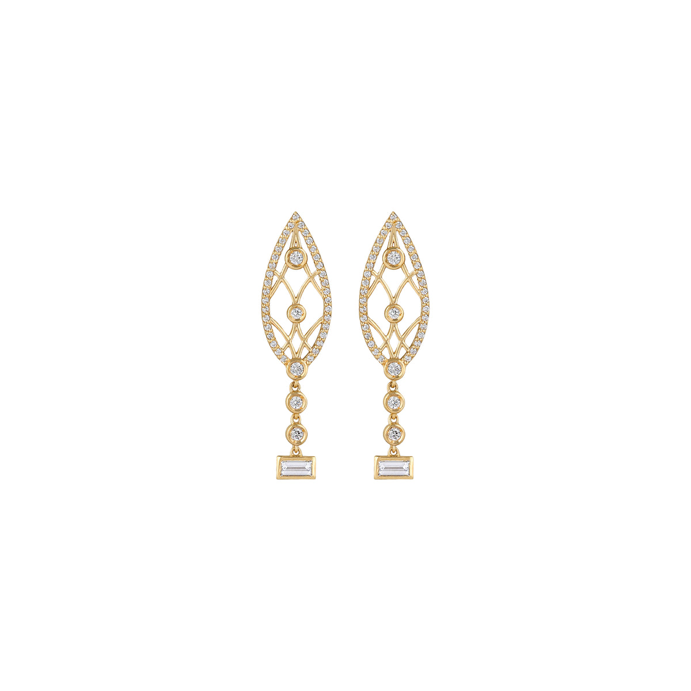
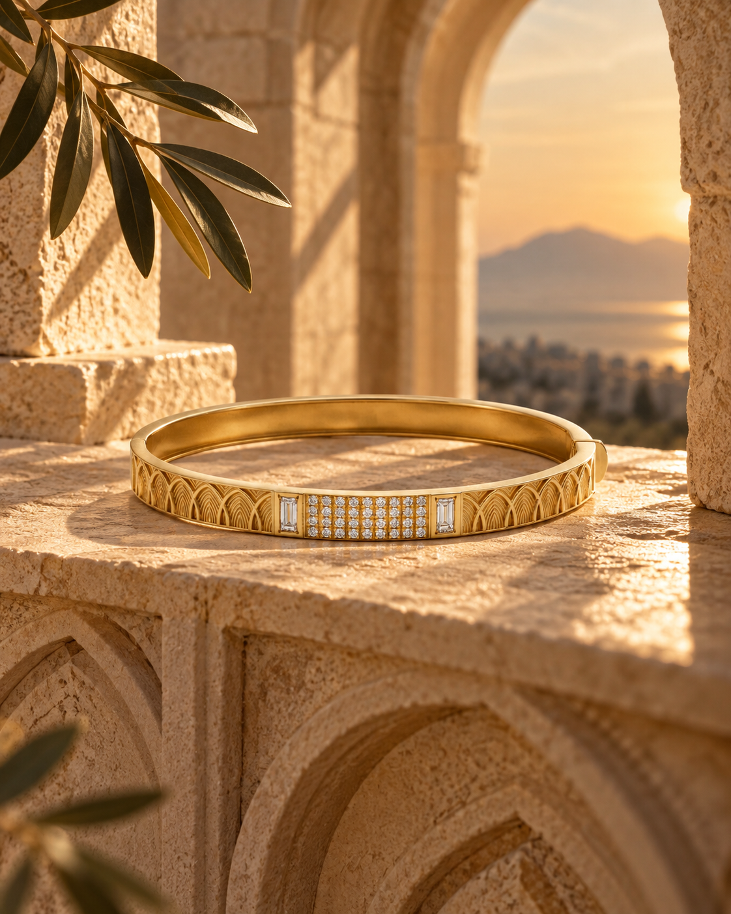
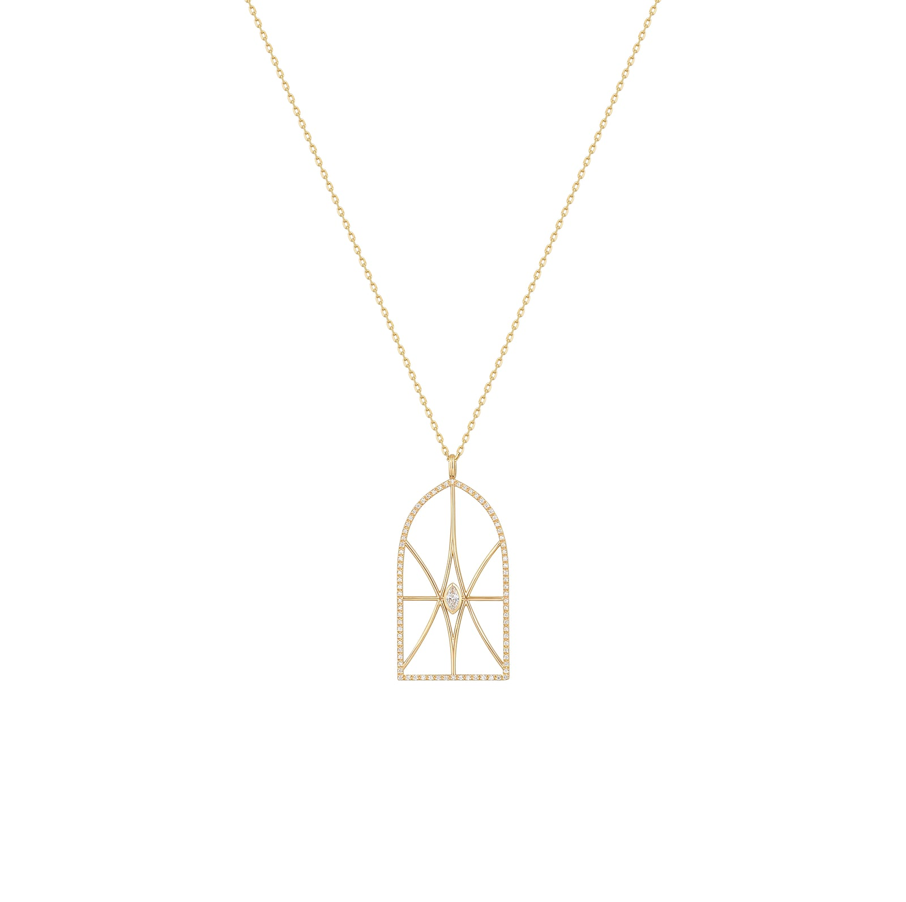
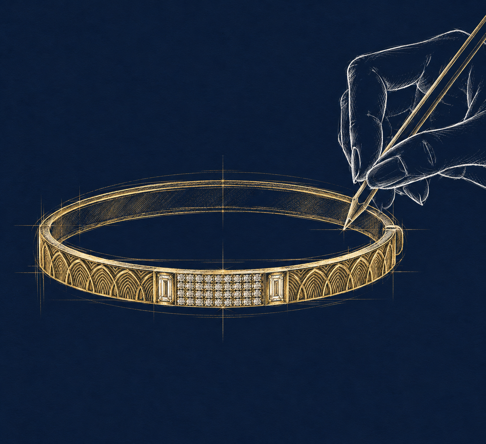
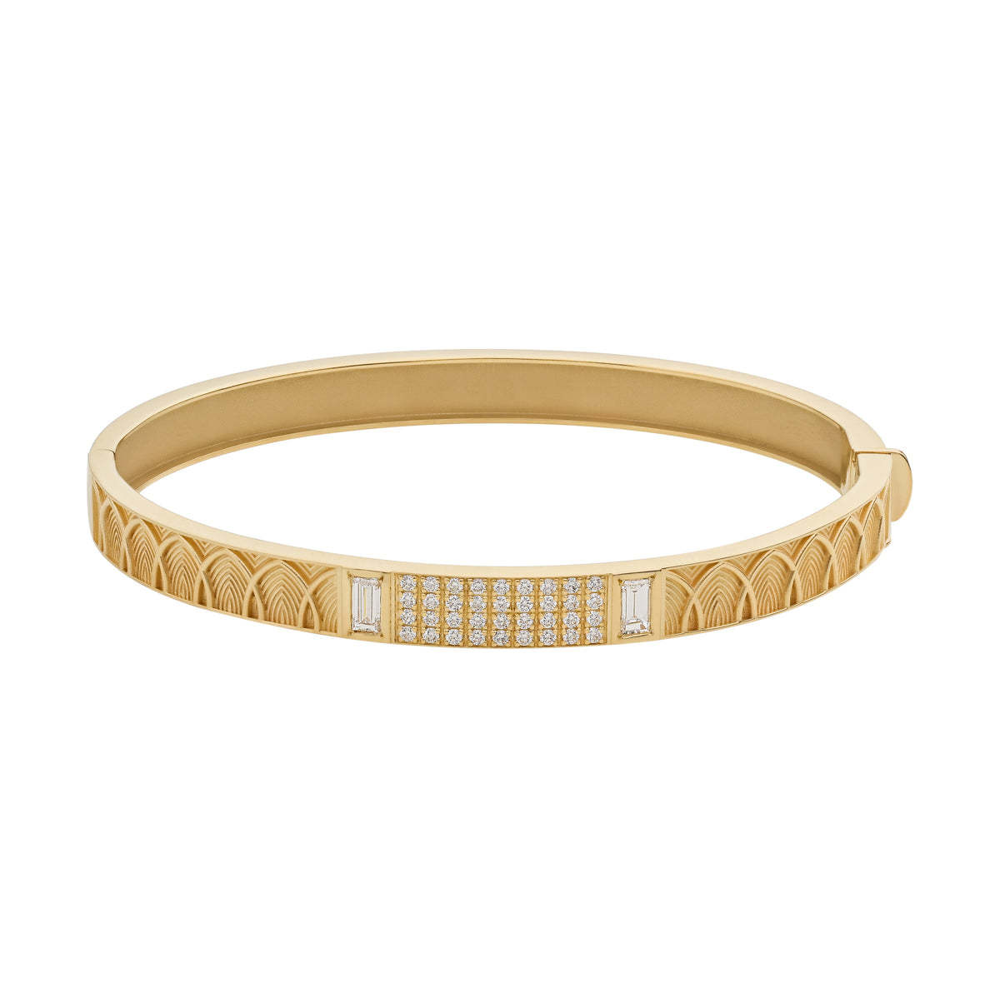

Echoes of Beirut
Inspired by Beirut's timeless streets and old arched windows — a celebration of the stories that live behind every window.
Collection I
Echoes of Beirut
Inspired by the city's timeless streets and old arched windows, each piece celebrates the stories that live behind them — made to be worn, treasured, and passed on.



From sketch to jewel
It begins as a sketch.
Every BAKI piece starts on paper — an arch, a window, a doorway remembered from Beirut's old houses.
Then it becomes gold.
The drawing is translated into metal and stones, detail by detail, until the arches catch the light.
Made to be passed on.
The Archways Bangle — designed to be worn every day, and treasured for generations.


Signature pieces
Worn every day, kept forever.
The founder
“More than jewellery, BAKI is my way of keeping a connection to where I come from.”
Some passions begin long before we name them. Since childhood, I have been fascinated by design, gemstones, and the graceful qanater and intricate details of Lebanon's traditional houses.
Years later, those memories found their way into the sketches I drew during business meetings. BAKI was born from them — a contemporary interpretation of Lebanese heritage.
Book a private viewingRooted in heritage
Every form begins with an arch, a window or a doorway from Lebanon's traditional houses.
Crafted with purpose
Each detail is shaped with precision and care, from the first sketch to the final polish.
Made to endure
Timeless pieces created to be treasured, and handed down to the next generation.